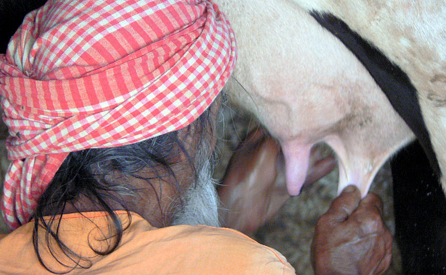

mailto:payer@payer.de
Zitierweise | cite as:
Payer, Alois <1944 - >: Sanskritkurs. -- 17. Lektion 17. -- Fassung vom 2008-12-07. -- URL: http://www.payer.de/sanskritkurs/lektion17.htm
Erstmals hier publiziert: 2008-12-07
Überarbeitungen:
Anlass: Lehrveranstaltungen 1980 - 1984
©opyright: Dieser Text steht der Allgemeinheit zur Verfügung. Eine Verwertung in Publikationen, die über übliche Zitate hinausgeht, bedarf der ausdrücklichen Genehmigung des Verfassers
Dieser Text ist Teil der Abteilung Sanskrit von Tüpfli's Global Village Library
Falls Sie die diakritischen Zeichen nicht dargestellt bekommen, installieren Sie eine Schrift mit Diakritika wie z.B. Tahoma.
Die Devanāgarī-Zeichen sind in Unicode kodiert. Sie benötigen also eine Unicode-Devanāgarī-Schrift.
| Die Verbalendungen treten direkt an die
Wurzel. Dabei sind die aus dem Wortsandhi resultierenden
Lautveränderungen zu beachte. Es gibt folgende Bildungsformen in der zweiten präsensklasse:
|
Beispiele:
द्विष् 2 U "hassen"
3. sg. Präs. P द्वेष्टि (« dveṣ + -ti) 3. pl. Präs. P द्विषन्ति (dviṣ-anti) 3. sg. Präs. Ā द्विष्टे (« dviṣ + -te) 3. pl. Präs. Ā द्विषते (dviṣ-ate)
Hierbei wirkt folgendes Wortsandhigesetz:
| Wortsandhi von -ṣ + t(h)- -ṣ + t(h)- » -ṣṭ(h)- |
Weitere Beispiele:
इ 2 P "gehen" (Ā nach bestimmten Präverbien)
3. sg. Präs. P एति (e-ti) 3. pl. Präs. P यन्ति (y-anti) 3. sg. Präs. Ā इते (i-te) 3. pl. Präs. Ā इयते (iy-ate)
दुह् 2 U "melken"
3. sg. Präs. P दोग्धि (« doh- + -ti) 3. pl. Präs. P दुहन्ति (duh-anti) 3. sg. Präs. Ā दुग्धे (« duh- + -te) 3. pl. Präs. Ā दुहते (duh-ate)
हन् 2 P "schlagen, erschlagen, töten"
3. sg. Präs. P हन्ति (han-ti) 3. pl. Präs. P घ्नन्ति (ghn-anti) 3. sg. Präs. Ā (हते) (ha-te) 3. pl. Präs. Ā (घ्नते) (ghn-ate)
अस् 2 P "sein"
3. sg. Präs. P अस्ति (as-ti) 3. pl. Präs. P सन्ति (s-anti)
Beispiel:
स्तु 2 U "preisen"
3. sg. Präs. P स्तौति (stau-ti) oder: स्तवीति siehe unter 5.
3. pl. Präs. P स्तुवन्ति (stuv-anti) 3. sg. Präs. Ā स्तुते (stu-te) 3. pl. Präs. Ā स्तुवते (stuv-ate)
|
Ohne Stammabstufung sind Wurzeln der zweiten Präsensklasse auf -ā |
Beispiel:
पा 2 P "schützen, behüten, hüten"
3. sg. Präs. P पाति (pā-ti) 3. pl. Präs. P पान्ति (« pā- + -anti)
Auch einige andere Wurzeln der zweiten Klasse haben keine Stammabstufung:
Beispiele:
अद् 2 P "essen"
3. sg. Präs. P अत्ति (« ad- + -ti) 3. pl. Präs. P अदन्ति (ad-anti)
आस् 2 Ā "sitzen"
3. sg. Präs. Ā आस्ते (ās-te) 3. pl. Präs. Ā आसते (ās-ate)
वच् 2 P "sagen"
3. sg. Präs. P वक्ति (« vac- + -ti) 3. pl. Präs. P kommt nicht vor
Mehrere Wurzeln sind in einer Reihe von Formen zweisilbig, d.h. sie haben vor konsonantischer Endung ein -i (bzw. vor einigen Endungen -ī). Diese Wurzeln werden aber trotzdem von den einheimischen Grammatikern und in Wörterbüchern usw. als einsilbig angesetzt.
Beispiele:
रुद् 2 P "weinen, heulen"
3. sg. Präs. P रोदिति (rodi-ti) 3. pl. Präs. P रुदन्ति (rud-anti)
ब्रू 2 U "sprechen"
3. sg. Präs. P ब्रवीति (bravī-ti) 3. pl. Präs. P ब्रुवन्ति (bruv-anti) 3. sg. Präs. Ā ब्रूते (brū-te) 3. pl. Präs. Ā
ब्रुवते (bruv-ate)
Auch स्तु 2 U "preisen" hat neben den unter 3. angegebenen Formen Formen nach diesem Muster:
3. sg. Präs. P स्तवीति (« sto + ī + ti) oder: स्तौति siehe unter 3.
हन् 2 P हन्ति, घ्नन्ति Pass. हन्यते PPP हत : schlagen, erschlagen, töten
davon:
घात m.: Tötung
Abb.: घाताः
Bangalore = ಬೆಂಗಳೂರು
[Bildquelle: mattlogelin. --
http://www.flickr.com/photos/mattlogelin/143399263/. -- Zugriff am
2008-12-07. --

 Creative
Commons Lizenz (Namensnennung, keine kommerzielle Nutzung)]
Creative
Commons Lizenz (Namensnennung, keine kommerzielle Nutzung)]
आस् 2Ā आस्ते Pass. आस्यते PPP आसित : sitzen
davon:
आसन n.: das Sitzen, Sitz ; auch: Sitzpositionen des Yogin
Abb.: योगासनम्
[Bildquelle: von tlongacre. --
http://www.flickr.com/photos/tlongacre/2177187487/. -- Zugriff am
2008-12-07. --

 Creative
Commons Lizenz (Namensnennung, keine Bearbeitung)]
Creative
Commons Lizenz (Namensnennung, keine Bearbeitung)]
रुद् 2 P रोदिति Pass. रुद्यते PPP रुदित : weinen, heulen
davon:
रुद्र m.: (der Heuler =) der Sturmgott Rudra
ब्रू 2 U ब्रवीति Ā ब्रुते kein Passiv und PPP: sprechen, sagen (etwas zu jemandem: doppelter Akkusativ)
दुह् 2 U दोग्धि Pass. दुह्यते PPP दुग्ध : melken

Abb.: दोग्धि
[Bildquelle: Roshnii. --
http://www.flickr.com/photos/roshnii/110086482/. -- Zugriff am 2008-12-07.
--


 Creative
Commons Lizenz (Namensnennung, keine kommerzielle Nutzung, share alike)]
Creative
Commons Lizenz (Namensnennung, keine kommerzielle Nutzung, share alike)]
दिश् 6 U दिशति Pass. दिश्यते PPP दिष्ट : zeigen, anweisen, befehlen
davon:
दिष्टि f.: Anweisung, glückliche Fügung
दिष्ट्या Instr.: (wörtl.: durch eine glückliche Fügung) O glückliche Fügung (Ausruf der Freude und Beglückung)
A) Setzen Sie in folgenden Sätzen das Verb ein und übersetzen Sie:
१. ब्राह्मनो ऽनृतं न ... (ब्रू । वच् । वद्)
२. क्षत्रियो जनान् ... (पा । रक्ष्)
३. बलवद्योधो द्विजारीन् ... (जि । हन् । युध्)
४. ब्राह्मणकविर्लोकेश्वरम् ... (स्तु । यज्)
५. अग्निर्यज्ञान्नम् ... (अद् । दह्)
६. बालवैश्यो धेनुम् ... (दुह् । रक्ष् । पा)
७. द्विजदासो मृगमार्गेण ब्राह्मणग्रामम् ... (गम् । इ । पद्)
८. द्विजदासः शूद्रस् ... (अस् २ । भू)
९. बालब्राह्मणी ... (रुद् । आस् । मृ)
१०. साधुजनो ऽधर्मम् ... (द्विष् । न कृ)
B) Setzen Sie in den in A) gebildeten Sätzen Agens und Verb in den Plural
Übersetzen Sie folgende Verbformen und geben Sie die dazugehörige Wurzel an:
१. अदन्ति
२. सन्ति
३. आसते
४. यन्ति
५. इच्छति
६. कुर्वते
७. गच्छन्ति
८. जायते
९. जयति
१०. तनोति
११. दहति
१२. दोग्धि
१३. पश्यति
१४. द्विष्टे
१५. नयन्ति
१६. नृत्यति
१७. पद्यन्ते
१८. पिबति
१९. पान्ति
२०. पृच्छति
२१. बुध्यन्ते
२२. ब्रवीति
२३. भवन्ति
२४. मन्यते
२५. मुञ्चन्ति
२६. म्रियन्ते
२७. यजते
२८. युध्यन्ते
२९. रक्षति
३०. रोदिति
३१. लभते
३२. वक्ति
३३. वदति
३४. शृणोति
३५. स्तौति
३६. स्मरति
३७. हन्ति
३८. अश्नुवते
३९. कुप्यते
४० कर्षन्ति
४१. उद्यते
४२. सहन्ते
४३. सिच्यन्ते
४४. आप्नोति
४५. जीव्यते
४६. दिश्यन्ते
Zu Lektion 18